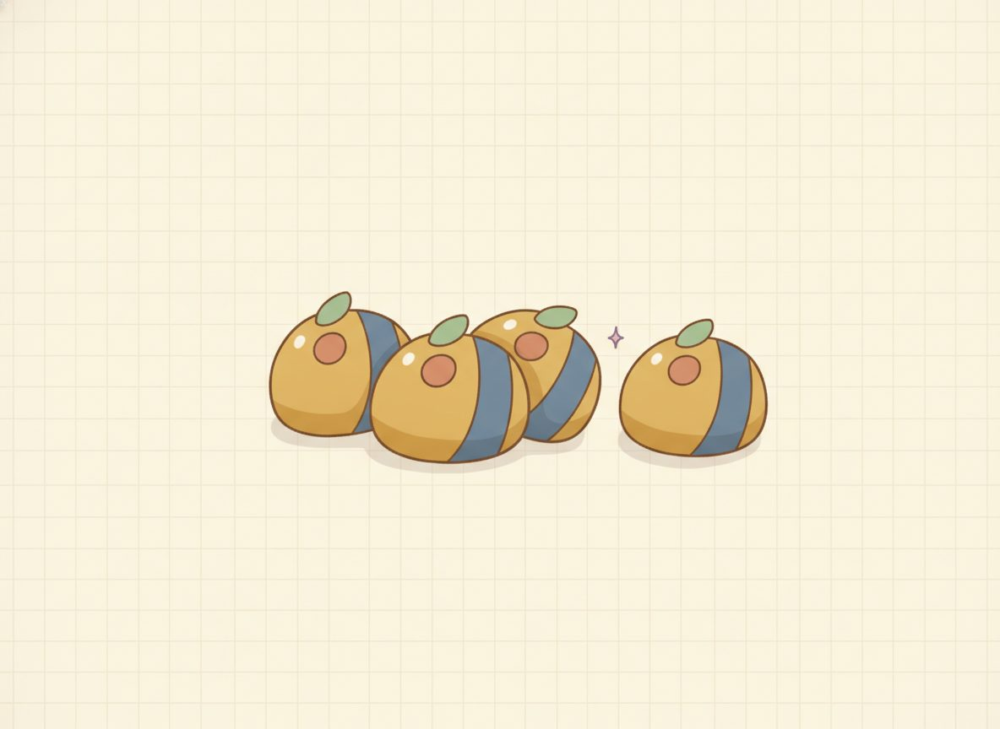

Ratios and rates
Suppose you drove 120 miles in 2 hours. How far did you go in one hour, on average? You split the 120 across the 2 hours and get 60 miles. That split is the whole idea of this lesson.
You took a comparison of two amounts and boiled it down to "per one hour." That per-one number, 60 miles per hour, is what the real world runs on: price per item, words per minute.
Here's the idea built up slowly, because the "per one" move is the one to get solid.
Start with the picture. Lay the trip out as a tiny two-row table: 2 hours sits across from 120 miles. You want the bottom row, the one that starts with a single hour.
Halve the hours to reach 1, and halve the miles to match: 1 hour sits across from 60 miles. That bottom row, the one with a 1 in it, is the unit rate.

Now the symbols, which are just shorthand for that table. A rate is a fraction, one quantity over the other, and "per one" means making the bottom number 1. So divide the top and the bottom by the same amount until the bottom is 1:
$$\frac{120 \text{ mi}}{2 \text{ hr}} = \frac{60 \text{ mi}}{1 \text{ hr}} = 60 \text{ mph}$$
You reduce a ratio the same way you reduce any fraction: divide both parts by a common factor. The value doesn't change when you do. You're renaming the comparison, not shrinking it.
And hold onto that "60 miles per 1 hour." In Unit 5, that same number is the slope of a line. You're not learning slope yet, but you're meeting it.
New words
- 3.1.d1 Ratio: a comparison of two quantities, written 3:2 or 3/2 or "3 to 2." The quantities can be the same kind of thing (dogs to cats).
- 3.1.d2 Part-to-part vs part-to-whole: "8 dogs to 12 cats" (8:12) compares one part to another part. But "8 dogs out of 20 animals" (8/20) compares a part to the whole. Same animals, different comparison. This matters: percents in 3.3 are all part-to-whole (part/whole = percent/100), so get comfortable sliding from 8:12 to 8 out of 20 now.
- 3.1.d3 Rate: a ratio comparing two unlike units (120 miles per 2 hours).
- 3.1.d4 Unit rate: a rate whose second quantity is 1 (60 miles per 1 hour = 60 mph). You get it by dividing.
Read each worked example slowly, a line at a time, and ask yourself why each line follows from the one above before you move on. That's what makes a worked example teach.
Worked example
-
3.1.w1 Unit rate (distance). 150 miles in 3 hours. To land on "per 1 hour," divide both top and bottom by 3, so the bottom becomes 1: $$\frac{150 \text{ mi}}{3 \text{ hr}} = \frac{150 \div 3}{3 \div 3}\,\frac{\text{mi}}{\text{hr}} = 50 \text{ mph}.$$ The bottom is now 1, so 50 mph is the unit rate. A quick gut check: 50 miles each hour for 3 hours is 150 miles, which matches the trip.
-
3.1.w2 Unit price. $6 for 4 apples. "Per apple" means the bottom has to be 1, so divide by 4. Keep the units attached. A rate compares two unlike things, so the dollars stay on top and the apples stay on the bottom: $$\frac{\$6}{4 \text{ apples}} = \frac{\$6 \div 4}{4 \text{ apples} \div 4} = \frac{\$1.50}{1 \text{ apple}} = \$1.50 \text{ per apple}.$$ The apples don't disappear and leave a bare 1.50; the answer is $1.50 per apple, a rate with units. Check it the other way: $1.50 for each of 4 apples is $6.
-
3.1.w3 Reduce a ratio. 12:18. Both parts share a factor of 6, so divide both by 6: $$12:18 = \frac{12 \div 6}{18 \div 6} = 2:3.$$ The comparison didn't shrink. 12:18 and 2:3 mark the same relationship, just written with smaller numbers. Reducing renames a ratio; it never changes its value.
Once you've read those, here's a clean one to get the move going before the practice mixes things up. A faucet fills 8 cups in 2 minutes. How many cups per minute? Divide both by 2 to make the bottom 1: 8 cups over 2 minutes is 4 cups per 1 minute, so 4 cups per minute. Nothing tricky, just the per-one move once.
With a few rates behind you, here are the two spots where this goes wrong most often.
The first is order. "8 dogs to 12 cats" is 8:12, not 12:8, since whatever's named first goes first. If you read a ratio back as words and it doesn't match the sentence, you've reversed it.
The second shows up when you compare deals. Ask "$1.50 per apple or $2 per apple, which is better?" and the bigger number can look like the better buy, but $1.50 is less money for the same one apple, so it's the better deal. Tie the answer to the actual size of the amount, not to which digit is larger. It's the same instinct that makes 1/6 feel bigger than 1/4 because 6 is bigger.
And one more, less a trap than a habit: "150 miles per 3 hours" isn't a unit rate yet. The unit in unit rate means per one, so you're not done until the bottom reads 1.
Before the practice, name your plan in a sentence for any rate problem: which quantity goes on the bottom, and what do you divide by to make it 1? And how will you know your answer is right? Multiply it back out and see if you return to the original totals.
Check yourself
- 3.1.c1 "A printer does 90 pages in 3 minutes. What's the unit rate, and what are its units?" (Divide both by 3: 90 pages over 3 minutes is 30 pages per 1 minute, so 30 pages per minute.)
- 3.1.c2 "Two stores: 3 cans for $4, or 5 cans for $6. Which is cheaper per can, and how did you decide?" (Make each a price per one can: $4 ÷ 3 ≈ $1.33 per can, $6 ÷ 5 = $1.20 per can. The second is cheaper, because once both are per one can you can compare the amounts directly.)
- 3.1.c3 "Why does 'unit rate' always have a 1 in it? What is the 1 counting?" (The 1 is the single unit of the bottom quantity, one hour or one apple or one minute, so the rate tells you how much you get for exactly one of them.)
- 3.1.c4 "There are 8 dogs and 12 cats. As a part-to-whole comparison, what fraction of those 20 animals are dogs?" (8 out of 20 animals, and 8/20 reduces to 2/5: the same dogs, now compared to the whole group, which is the form percents will use.)
You can now write and reduce a ratio, find a unit rate by dividing until the bottom is 1, and read that unit rate as the "per one" amount the real world runs on.
Mixing the problem types feels harder than drilling one kind in a row, and that difficulty is what makes a skill last to next week. Every problem below has its answer at the end of the lesson. If one stalls you, go back to the worked example it's built on.
Practice
Reduce ratios to lowest terms:
Find the unit rate / unit price:
- 3.1.3 A car travels 180 miles in 4 hours. Find the unit rate (mph).
- 3.1.4 $20 buys 5 notebooks. What does each notebook cost?
- 3.1.5 A typist writes 240 words in 6 minutes. Find the rate in words per minute (wpm).
Rate as a fraction (think before reducing):
- 3.1.6 A recipe uses 6 eggs for 24 pancakes. How many eggs per pancake? (Give a fraction.)
AnswersTry each one yourself first, then open to check.
- 8:12 = 2:3.
- 180 ÷ 4 = 45 mph.
- $20 ÷ 5 = $4 each.
- 15:25 = 3:5.
- 240 ÷ 6 = 40 wpm.
- 6 eggs / 24 pancakes = 1 egg / 4 pancakes = 1/4 egg per pancake — keep the units on the simplified rate (it's a rate, two unlike units, not a bare 1/4). (Fewer than one egg per pancake — a fine, real fraction.)